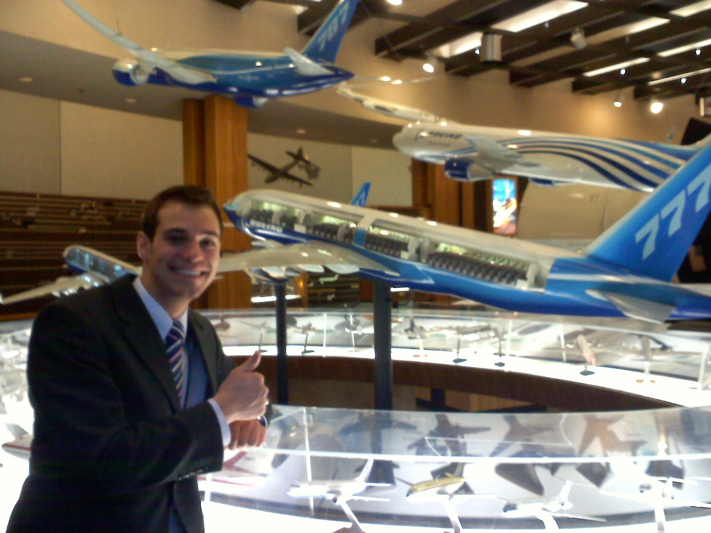

Professional Experience & Education


Summary
Kilpatrick Townsend & Stockton LLP, Expected Summer 2016
Boeing Defense Space & Security; Phantom Works - Adv. Space Exploration
B.S. Aerospace Engineering
B.S. International Affairs
Georgia Institute of Technology
Bachelor of Science; Aerospace Engineering - 2010
Bachelor of Science; International Affairs - 2010
President’s Undergraduate Research Award: Links b/n Globalization, Modernization, and Overpopulation
Study Abroad: East Asian Economics & Trade: Studied global supply chains, logistics, and industrialization
Study Abroad: European Union & Trans-Atlantic Security: Studied NATO security agreements and EU politics
Kilpatrick Townsend & Stockton LLP
Summer Associate - Patent Litigation Practice (Expected Summer 2016)
U.S. Attorney’s Office – District of Columbia
Intern - Appelate Division (1/16 - present)
Fragomen, Del Rey, Bernsen & Loewy, LLP
Law Clerk (6/15 – 07/15)
Responded to government inquiries and Requests for Evidence regarding pending application
Drafted support letters and filed immigration petitions, including H-1B, L-1, I-140, E-2, and TN petitions
Researched memos on whether job duties met USCIS, Dept. of State, and Dept. of Labor requirements
Sterne, Kessler, Goldstein & Fox, PLLC
1L Internship (3/15 – 4/15)
Studied whether a 3rd-party needed a case or controversy to appeal a PTO Inter Partes Review judgement
Boeing Defense, Space & Security
BDS Global Engineering - Research Analyst (10/12 – 4/13)
Boeing Accomplishment Award: Aided the GS&S Diversity Council in their Saudi Global Campaign
Designed online tools and tutorials to teach over 55,000 employees about IP export law and compliance
Catalogued all internal memos and rulings regarding the International Traffic in Arms Regulations (ITAR) and Export Administration Regulations (EAR)
Identified business development risks and suggested regional strategies
Phantom Works; Adv. Space Exploration - Aerodynamics Engineer (2/11 – 10/12)
Boeing Accomplishment Award: Worked on the Reusable Booster System proposal
Authored manufacturing specifications and UniGraphics models for the prototype CST-100 space vehicle
Wrote the Instrumentation and Vehicle Assist sections of a proposal for a USAF prototype rocket
Sam Nunn School of International Affairs
Undergraduate Researcher (1/10 – 6/10)
Researched Israeli Nanotechnology Policy and Funding under the Co-Dir. of Technology & Security
Forecasted Israeli research goals through technical capabilities and investment tactics
Seegrid Corporation
Manufacturing Engineering Intern (5/06 – 12/09)
Used Inventor 9.0 and AutoCAD to create technical drawings, schematics, and documentation
Implemented new drafting templates and standards for the start-up firm’s 3-D modeling division
Miscellaneous
Georgia Tech Department of Housing - Office Assistant (2005-08)
Kimball's Ice Cream - Scooper (2004-05)
Orleans Restaraunt - Server (2014)